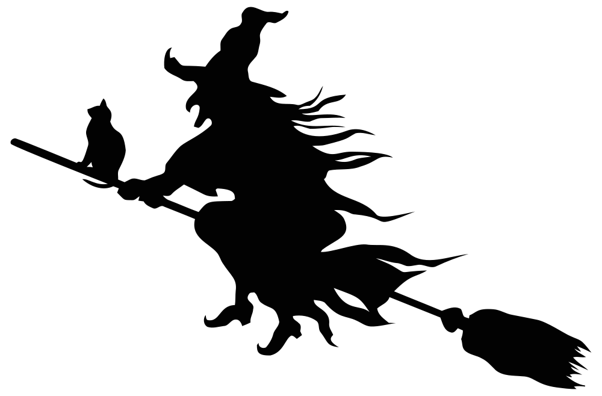
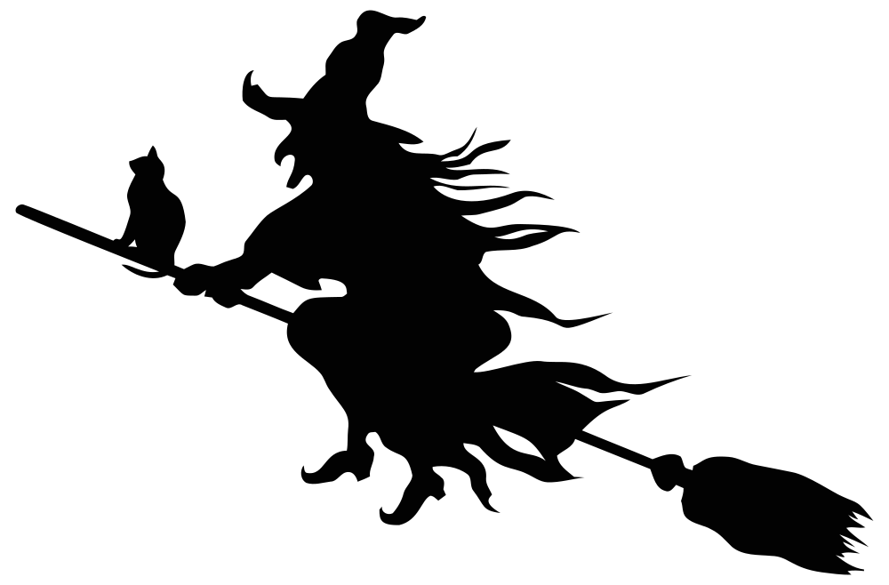
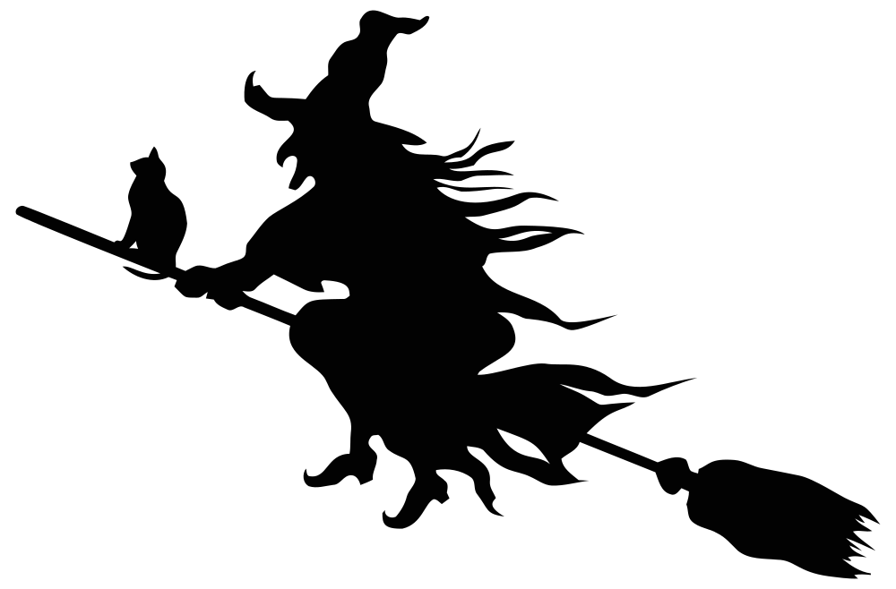
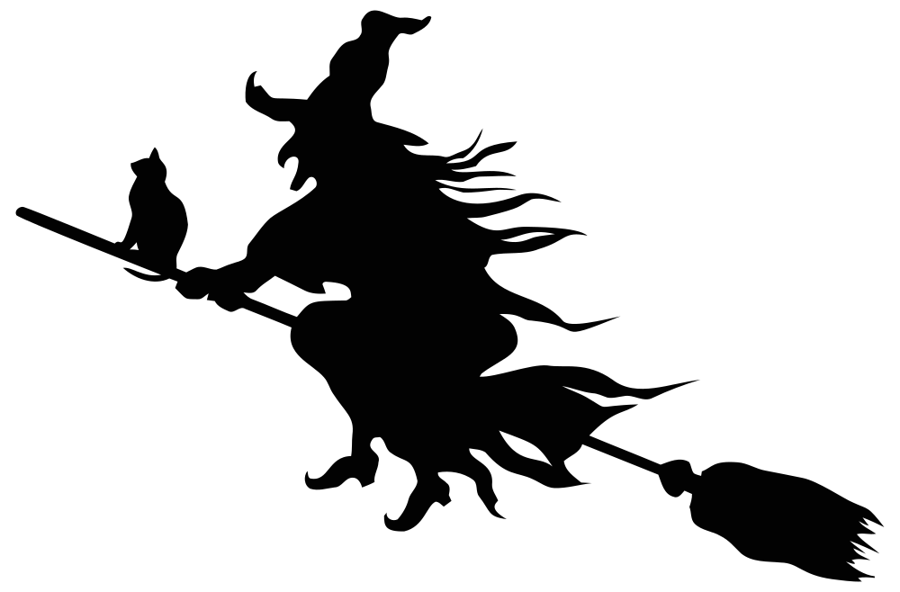

Halloween
 



On May 13, 609 A.D., Pope Boniface IV dedicated the Pantheon in Rome in honor of all Christian martyrs, and the Catholic feast of All Martyrs Day was established in the Western church. Pope Gregory III later expanded the festival to include all saints as well as all martyrs, and moved the observance from May 13 to November 1. By the 9th century the influence of Christianity had spread into Celtic lands, where it gradually blended with and supplanted the older Celtic rites. In 1000 A.D., the church would make November 2 All Souls’ Day, a day to honor the dead. It’s widely believed today that the church was attempting to replace the Celtic festival of the dead with a related church-sanctioned holiday. All Souls Day was celebrated similarly to Samhain, with big bonfires, parades, and dressing up in costumes as saints, angels and devils. The All Saints Day celebration was also called All-hallows or All-hallowmas (from Middle English Alholowmesse meaning All Saints’ Day) and the night before it, the traditional night of Samhain in the Celtic religion, began to be called All-Hallows Eve and, eventually, Halloween.
Celebration of Halloween was extremely limited in colonial New England because of the rigid Protestant belief
systems there. Halloween was much more common in Maryland and the southern colonies.
As the beliefs and customs of different European ethnic groups as well as the American Indians meshed, a
distinctly American version of Halloween began to emerge. The first celebrations included “play parties,” public
events held to celebrate the harvest, where neighbors would share stories of the dead, tell each other’s
fortunes, dance and sing.
Colonial Halloween festivities also featured the telling of ghost stories and mischief-making of all kinds. By
the middle of the nineteenth century, annual autumn festivities were common, but Halloween was not yet celebrated
everywhere in the country.
In the second half of the nineteenth century, America was flooded with new immigrants. These new immigrants,
especially the millions of Irish fleeing the Irish Potato Famine, helped to popularize the celebration of
Halloween nationally.
Borrowing from Irish and English traditions, Americans began to dress up in costumes and go house to house
asking for food or money, a practice that eventually became today’s “trick-or-treat” tradition. Young women
believed that on Halloween they could divine the name or appearance of their future husband by doing tricks with
yarn, apple parings or mirrors.
In the late 1800s, there was a move in America to mold Halloween into a holiday more about community and
neighborly get-togethers than about ghosts, pranks and witchcraft. At the turn of the century, Halloween parties
for both children and adults became the most common way to celebrate the day. Parties focused on games, foods of
the season and festive costumes.
Parents were encouraged by newspapers and community leaders to take anything “frightening” or “grotesque” out of
Halloween celebrations. Because of these efforts, Halloween lost most of its superstitious and religious
overtones by the beginning of the twentieth century.